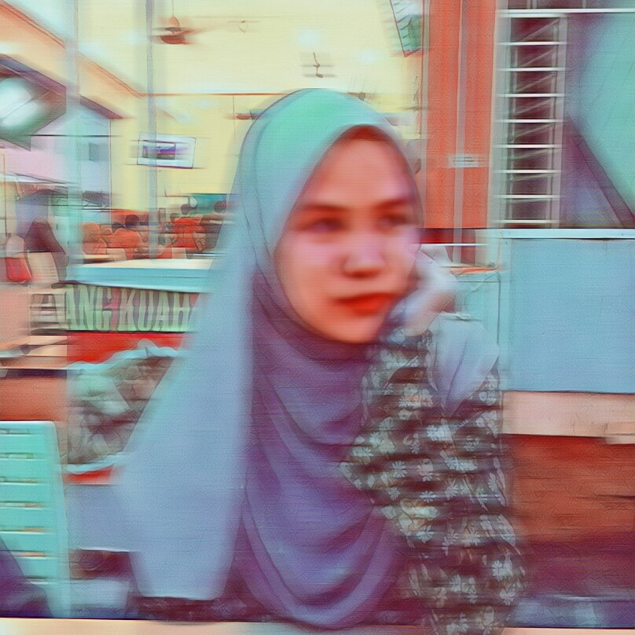

|

|
My name is Syahdiatul Farahana.
By the time this website is created, I'am 20 y/o.
Born on 18th of October 1999, which makes me a Libra.
Iam on my final semester , studying under the Faculty
of Computer Science, UiTM Kampus Samarahan 2.
There is several things that I like but for now Iam
addicted to music. The combination of lyrics and beats
makes music which leads to the development of songs.
Music isn't just a music, it is a notes.
A beautiful notes that gave us pleasure by listening to it.
Music is a way to learn the art of listening.
|